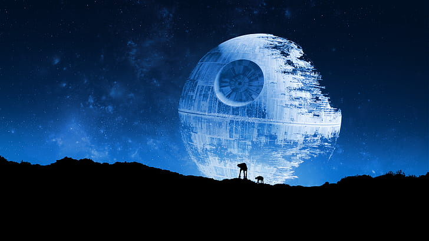

Галактическая Империя
«Она [Империя] как космический слизень: существует лишь для того, чтобы существовать. Она будет пожирать и пожирать всё вокруг.»
Галактическая Империя, также известная как Первая Галактическая Империя и Новый порядок, обычно называемая Империей, Порядком, а после уничтожения — Старой Империей — фашистская галактическая диктатура, образованная из Галактической Республики после завершения Войн клонов. Наращивавший силы последние годы существования Республики лорд ситхов Дарт Сидиус окончательно утвердил правительство под своим контролем, провозгласив себя первым Галактическим Императором Шивом Палпатином. Через махинации своих обеих ипостасей — Верховного канцлера и лорда ситхов, — он смог уничтожить Орден джедаев и депопуляризировать Галактический Сенат, положив конец тысячелетию демократии.

Почти два десятилетия имперской машине Палпатина не существовало преград: любые попытки сопротивления сметались разросшимися вооружёнными силами. Большую часть существования Империи, единственным напоминанием о демократии и Республике оставался Имперский Сенат, который был распущен после получения Империей мощи «Звезды Смерти». Тем не менее, Имперское владычество, тяжело отразившееся на отдалённых мирах, привело к возникновению сопротивляющихся режиму сил, в конечном итоге сформировавших Альянс за восстановление Республики. Объединённый общей целью, Альянс добился первых успехов, завладев чертежами «Звезды Смерти» и уничтожив её в битве при Явине.
